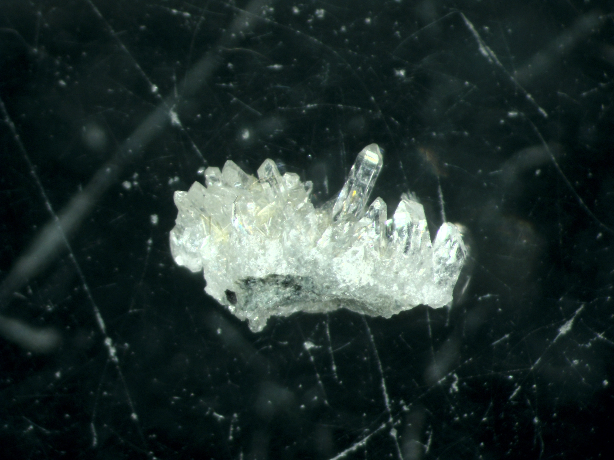

INTRO
Our environment is shaped by the reactions that occur at the interface between the hydrosphere, atmosphere, and silicate Earth. My endeavors involve developing novel approaches in isotope geochemistry to reconstruct environmental conditions through such reactions imprinted in the rock record. I like to think about the following questions: What is the connection between the evolution of continental crust and the long-term changes in climate? What are the feedbacks between seawater dissolved content, atmospheric chemistry and the rock cycle? What are the formations, minerals and isotope systems that offer proxies for unreacted seawater or local precipitation early in geologic history?
My work focuses on O-isotope geochemistry, including O-17, in Precambrian geology, magmatic-hydrothermal systems and alteration processes. I routinely measure δD, δ17O and δ18O in cherts, granites, and hydrothermally altered oceanic crust. Normally, I like to study old (Precambrian) rocks because there are fewer reliable environmental proxies, thus, the world is less constrained, and the approaches must be creative. I also enjoy studying modern environments, be it altered oceanic crust, hydrothermal vent fluids or a geothermal plant.
PROJECTS
As a lead scientist, I have targeted:
Paleoproterozoic snowball Earth glaciations, their timing and conditions
| - Surface temperatures and timing of melt-water infiltration during Snowball Earth glaciations
| - New occurrences across cratons, thier potential connections in the Paleoproterozoic based on O-isotopes
Marine δ18O and solute chemistry in the Proterozoic
| - Seawater isotope value recorded in well-preserved 2.41 Ga altered basalts
| - Changes in altered oceanic crust in relation to evolving marine solutes 2.41 Ga
Modern-day water-rock reactions traced with triple O:
| - O-17 signals of modern seawater/meteoric water - basalt reactions in Iceland with measurements of rocks and fluids
| - Modernd-day seawater-basalt exchange traced with the O-17 measurements of submarine vent fluids
Isotope record of seawater using in situ microscale and bulk 17O measurements of ancient and modern cherts:
| - Precambrian (and now modern) chert-forming fluids based on O-17 measurements and micrometer-scale heterogeneities
On-going projects include using Secondary Ion Probe measurements of stable isotopes to answer questions in hydrothermal reactivity of seawater in oceanic crust, diagenetic maturation of cherts, triple O isotope geochemistry of terrestrial rocks, rock-water exchange experiments.
SHORT BIO AND CV

I did my undergraduate degree at the Russian State Geological Prospecting University in Moscow studying general and economic geology with specific focus on geochemistry and mineralogy of ore deposits. I did my PhD at the University of Oregon under supervision of Ilya Bindeman. For my postdoctoral research, I am working at the SwissSIMS laboratory of the University of Lausanne. The analytical endeavors include laser fluorination, high-precision gas source mass spectrometery and secondary ion probe measurements. My field work has taken me to Russian Kola Peninsula and Karelia, Scottish Highlands and Iceland. See my CV.
PUBLICATIONS
| Authors | Year | Title | Journal | Volume | Pages |
|---|---|---|---|---|---|
| Zakharov D.O., Zozulya D.R. and Rubatto D. | 2022 | Low-?18O Neoarchean precipitation recorded in a 2.67 Ga magmatic-hydrothermal system of the Keivy granitic complex, Russia | Earth and Planetary Science Letters | 578 | 117322 |
| Zakharov D.O., Tanaka R., Butterfield D.A. and Nakamura E. | 2021 | A New Insight Into Seawater-Basalt Exchange Reactions Based on Combined ?18O—?17O—87Sr/86Sr Values of Hydrothermal Fluids From the Axial Seamount Volcano, Pacific Ocean. | Frontiers in Earth Sciences | 9 | 691699 |
| Zakharov D.O., Lundstrom C.C., Laurent O., Reed M.H., and Bindeman I.N. | 2021 | Influence of high marine Ca/SO4 ratio on alteration of submarine basalts at 2.41 Ga documented by triple O and Sr isotopes of epidote | Precambrian Research | 358 | 106164 |
| Zakharov D.O., Marin-Carbonne J., Alleon J. and Bindeman I.N. | 2021 | Temporal triple oxygen isotope trend recorded by Precambrian certs: A perspective from combined bulk and in situ secondary ion probe measurements. | Reviews in Mineralogy & Geochemistry | 86 | 323-365 |
| Waterton P., Hyde W.R., Tusch J., Hollis J.A., Kirkland C.L., Kinney C., Yakymchuk C., Gardiner N.J., Zakharov D., Olierook H.K.H., Münker C., Lightfoot P.C. and Szilas K. | 2020 | Geodynamic implications of synchronous norite and TTG formation in the 3 Ga Maniitsoq Norite Belt, West Greenland. | Frontiers in Earth Sciences | 8 | 562062 |
| Zakharov D.O., Bindeman I.N., Tanaka R., Fridleifsson G.O., Reed M.H. and Hampton R.L. | 2019 | Triple oxygen isotope systematics as a tracer of fluids in the crust: A study from modern geothermal systems of Iceland. | Chemical Geology | 530 | 119312 |
| Zakharov D.O., Bindeman I.N., Serebryakov N.S., Prave A.R., Azimov P.Ya. and Babarina I.I. | 2019 | Low ?18O rocks in the Belomorian belt, NW Russia and Scourie dikes, NW Scotland: A record of ancient meteoric water captured by the early Paleoproterozoic global magic magmatism. | Precambrian Research | 333 | 105431 |
| Zakharov D.O. and Bindeman I.N. | 2019 | Triple oxygen and hydrogen isotopic study of hydrothermally altered rocks from the 2.43-2.41 Ga Vetreny belt, Russia: An insight into the early Paleoproterozoic seawater. | Geochimica Cosmochimica Acta | 248 | 185-209 |
| Bindeman I.N., Zakharov D.O., Palandri J., Greber N.D., Retallack G.J., Hofmann A., Dauphas N., Lackey J.S. and Bekker, A. | 2018 | Rapid growth of subaerial crust and the onset of a modern hydrologic cycle at the Archean-Proterozoic transition. | Nature | 557 | 545-548 |
| Avice, G., Marty, B., Burgess, R., Hofmann, A., Philippot, P., Zahnle, K., and Zakharov, D. | 2018 | Evolution of atmospheric xenon and other noble gases inferred from Archean to Paleoproterozoic rocks. | Geochimica Cosmochimica Acta | 232 | 82-100 |
| Zakharov D.O., Bindeman I.N., Slabunov A.I., Ovtcharova M., Coble M.A., Serebryakov N. S. and Schaltegger U. | 2017 | Dating the Paleoproterozoic snowball Earth glaciations using contemporaneous subglacial hydrothermal systems. | Geology | 45 | 8-May |
| Bindeman I.N., Bekker, A. and Zakharov D.O. | 2016 | Oxygen isotope perspective on crustal evolution on early Earth: A record of Precambrian shales with emphasis on Paleoproterozoic glaciations and Great Oxygenation Event. | Earth and Planetary Science Letters | 437 | 101-113 |
| Khisamutdinova A.I., Zakharov D.O. and Soloviev A.V. | 2015 | The Western Kamchatka sedimentary basins: origin, age and composition of basal conglomerates (in Russian). | Russian Journal of Pacific Geology | 34 | 78-92 |
| Onikienko L.D., Uganov, S.S., Zakharov D.O. and Ivanov, M.A. | 2012 | Geology, mineralogy and formation conditions “Oskolskiy” gold-bearing conglomerates from Kursk Magnetic Anomaly (in Russian). | Razvedka i Ohrana Nedr | 12 | 7-Mar |
SIDE PROJECTS
A few projects conducted in my spare time are listed below:
Adularia: A web-based application that calculates mineral formula based on EMPA analyses
A Shiny app that visualizes elemental maps in the Vetreny belt sample of hydrothermally altered komatiitic basalt (takes a while to load).
Oxygen isotope cheahsheet is a pdf/ppt file with oxygen isotope delta-notations, ranges, standardizations, fractionation factors, meteoric water cycle, etc.